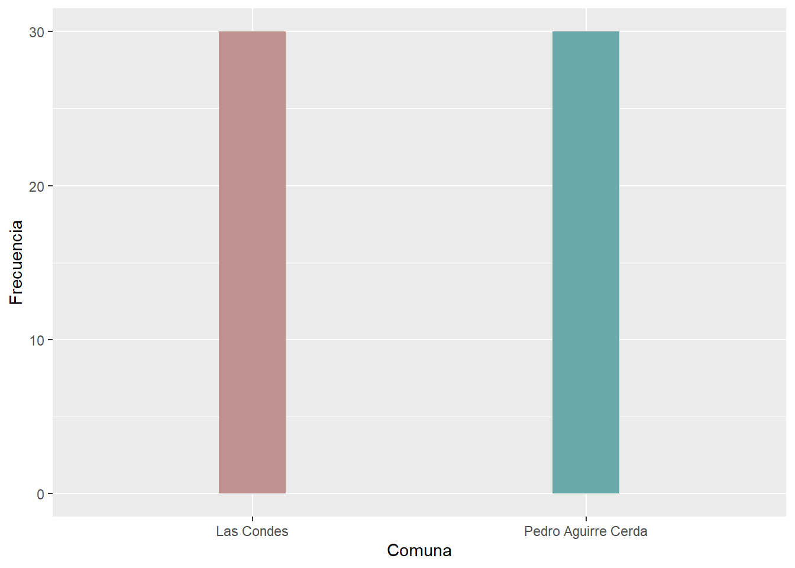

Estrategias para la Seguridad Económica en la Vejez
Josefina Carrasco, Isidora Didier, Valentina Gonzalez, Karen Sepúlveda y Martina Silva
26/6/2020
1. Introducción
La estructura de oportunidades para el acceso a la seguridad económica en la vejez, en América Latina, cuenta con amplias deficiencias, sobre todo cuando se contrasta con la situación que experimentan los países más desarrollados de Europa, tal y como da cuenta el reporte del Accion (CFI) (2015). En ese sentido, la literatura precedente concuerda, en términos generales, en que dos consideraciones son esenciales para ofrecer un análisis sobre esta temática, en tanto determinan en gran medida el estatus socioeconómico que presentarán los sujetos en la etapa de vejez; esto es, la posición que ocupan en la estructura tanto por clase social como por género.
Así, se sostiene que el carácter materialmente precario de la pobreza y la posición de desventaja que vivencian las mujeres acorde a la jerarquía de género tienen claros efectos en las vidas de las y los individuos en la vejez, en la medida en que ambas situaciones de vulnerabilidad se manifiestan de manera acumulada en las condiciones con las que enfrentan este período (Tapichin, 2009).
En Chile, “a pesar de las diversas reformas (del 2006 y 2008) que intentaron resolver el problema de cobertura de la población, calidad de las prestaciones y sus vínculos con el presupuesto fiscal” (Uthof, 2011, pág. 14) que había dejado la reforma al sistema de pensiones ocurrida durante la dictadura de Augusto Pinochet. Especialmente en la reforma del 2008, los objetivos principales de la reforma buscaban que el Estado estuviera más presente, haciéndose ”cargo de generar incentivos para que una mayor cantidad de personas autofinancie sus pensiones y/o proveer pensiones solidarias.“ (Uthof, 2011, pág. 15). En ese sentido, podríamos decir que hay un giro hacia el asistencialismo, puesto que, a pesar de las subvenciones y reformas empleadas por los gobiernos, al ser un sistema de capitalización individual, las dificultades de empleo e ingresos se terminan por acarrear irremediablemente hasta la vejez y, por ende, estas no logran solucionar de raíz las desigualdades propias del sistema.
En virtud de ello, la presente investigación busca dar cuenta de las diferentes estrategias empleadas por individuos en edad de jubilación para alcanzar la seguridad económica -o, según el caso, las condiciones mínimas de supervivencia- acorde a su posición de género y de clase, en las comunas de Lo Barnechea y San Bernardo. De tal manera, la pertinencia de esta investigación se sostiene en la necesidad de mostrar la existencia de variables estratificadoras que se acumulan a lo largo del trayecto de vida (Huenchuan & Guzmán, 2007) de los individuos y, con ello, poder contrarrestar la invisibilización de la situación de los adultos mayores en Chile, sobre todo teniendo en consideración las transformaciones demográficas que se están produciendo en el país, dentro de las cuales se destaca el creciente envejecimiento poblacional que, además, posee un carácter eminentemente femenino (Tapichin, 2009). El aporte específico que este trabajo realiza al campo de estudio radica en, por un lado, continuar los esfuerzos investigativos ya realizados y, por otro, ofrecer un análisis más explícito del contraste que se produce entre clases en Chile, en la medida en que, mientras la mayoría de los trabajos anteriores realizan una mirada más general y se centran casi en su totalidad en los sectores más empobrecidos, esta investigación pone en contacto las estrategias empleadas tanto por un sector de la clase baja, como por uno de la clase alta, enriqueciendo la producción de conocimiento respecto al tema.
De esta manera, la hipótesis central que se maneja en este estudio refiere a que la acumulación de condiciones desiguales a lo largo de la vida tiene claros efectos que se manifiestan ampliamente en la vejez (Madrigal-Martinez, 2010), en tanto condicionan en gran medida las herramientas con las que los adultos mayores podrán enfrentarse a las necesidades objetivas que se les presenten en dicha etapa. Por una parte, se espera que se produzca una amplia brecha entre las estrategias empleadas por la clase baja y las empleadas por la clase alta, puesto que la primera se encuentra en una situación de mayor precariedad, tendiendo así a una mayor dependencia hacia las estrategias extra-pensionales y, entre ellas, se destaca el trabajo informal y el independiente. En contraste, en la clase alta se esperarían la inversión en bienes materiales como principal estrategia económica.
Por su parte, se espera también la existencia de brechas de género en cuanto a las estrategias económicas para enfrentar la etapa de vejez en ambas clases. No obstante, la literatura precedente sugiere que las diferencias sean probablemente más amplias al interior de la clase baja, puesto que las mujeres de clase baja se encuentran en una situación mucho más precaria, según Vaquiro Rodríguez & Stiepovich Bertoni (2010) y Tapichin (2009) , a su vez, como estas dependen mucho más de los ingresos por hogar que las mujeres de clase alta, que también estén más obligadas a recurrir a más fuentes que, además, tiendan a la informalidad y precariedad socioeconómica y laboral.
2. Antecedentes
2.1. Estrategias
En primer lugar, Medina & Calvo (1997) consideran las estrategias como toda selección de cursos de acción (recursos) para producir resultados futuros (objetivos), y, más específicamente, comprenden las estrategias familiares como asignaciones de recursos con el objeto de maximizar su aptitud para adaptarse a entornos materiales y sociales. Esta conceptualización implica la presencia de un margen de maniobra o una amplia gama de posibilidades, objetivos a largo y mediano plazo previamente definidos, y un rango de incertidumbre (Arteaga, 2007) (Requena, 2006). Por lo tanto, podemos identificar esta definición como cercana a la teoría de la acción racional, la cual, al entender estas estrategias como algo individual, racional e independiente de otras variables, no puede explicar las limitantes de las decisiones. En ese sentido, Hofer (1978) introducen una definición un tanto más relacional de estrategia, presentándola como una posición, como la fuerza mediadora, o “acoplamiento”, entre la organización o individuo y el medio ambiente, en otros términos, entre el contexto interno y el contexto externo (Hofer, 1978), logrando explicar así, la interrelación entre la dimensión individual y las limitantes objetivas en la utilización de una u otra estrategia por parte de sujetos o grupos de sujetos dentro de la estructura social.
De tal forma, más específicamente para efectos de esta investigación, el comportamiento estratégico no implicará las tres condiciones planteadas por Trinidad. En específico, por un lado, respecto a la amplia gama de posibilidades, por lo general en los sectores sociales bajos, esta amplitud no se corresponderá con la realidad, ya que las opciones de las personas estarán condicionadas por estructuras sociales que regulan su acceso a la información, sus condiciones materiales, y sus objetivos a futuro.
Estas estructuras sociales constituyen culturas económicas, que se exacerban en la vejez y que, como afirma Sánchez (2000), están condicionadas por elementos como el estatus, las clases sociales y la educación. Esta exacerbación, se debe a que esta supuesta libertad y variedad de opciones, encuentra dos problemas. En primer lugar, la edad, porque se suele asociar la vejez con menos productividad; lo que repercute en menos oportunidades laborales, como también en menos posibilidades de adquirir un crédito. Y en segundo lugar, surge el problema asociado a las desigualdades de género; las mujeres llegan a la vejez en condiciones desiguales en comparación a los hombres, sobre todo aquellas que han desempeñado labores no remuneradas, como ser “dueñas de casa” o que han trabajado en empleos que solo alcanzan a cubrir los gastos básicos, no pudiendo ahorrar pensando en la vejez; como también, porque son consideradas como menos productivas.
Por otro lado, Hintze (2009) utiliza el término estrategias de reproducción, las cuales son desarrolladas -consciente o inconscientemente- por los sectores populares urbanos para satisfacer sus necesidades. Además, éstas se realizan tomando en consideración tanto las elecciones individuales, como las estructuras sociales, enfatizando en que las personas pueden elegir estrategias solo desde lo objetivamente posible por sus condiciones sociales (Hintze, 2009). Por lo tanto, esta perspectiva teórica sí permitirá acercarse a las limitantes estructurales a las estrategias y elecciones. También, las estrategias familiares han sido conceptualizadas como actividades y comportamientos que las familias realizan para su reproducción, más precisamente, mecanismos al interior de los hogares para mantener o aumentar el nivel de bienestar (Arteaga, 2007).
Para Meert (2000), en cambio, éstas estarán dirigidas hacia objetivos específicamente económicos, lo cual cobra sentido para este estudio, referido a las estrategias de seguridad económica en la vejez. Un punto importante es que, desde estas perspectivas teóricas, se estudian las estrategias a nivel familiar, lo que no permite estudiar las estrategias individuales, lo cual es problemático sobre todo porque ignora las diferencias entre individuos, por ejemplo, entre hombres y mujeres.
Respecto al estudio de estas estrategias, Madariaga & Perez (2012), mediante un enfoque cualitativo, estudiaron la manera en que las personas toman decisiones previsionales, enfatizando en las posibilidades -o no- de agencia y los elementos estructurales que condicionan estas decisiones. Algunos de sus hallazgos refieren a una conceptualización respecto a las decisiones más frecuentes. En esa línea, y en relación con el presente estudio, los autores identifican tres fuentes principales de generación de ingresos alternativos a la pensión: a) el trabajo, mostrando una preferencia por el trabajo independiente; b) la inversión, destacando la adquisición de bienes para formar una microempresa; y c) el apoyo familiar, pero señalando que las personas sienten rechazo hacia esta opción, y, por lo tanto, situándola como una decisión de última instancia. Además, señalan la poca mención a los beneficios estatales y a la caridad.
Finalmente, los autores conceptualizan algunos tipos de estrategias, como lo es la gestión complementaria, que consiste en generar mecanismos para obtener dinero adicional para mejorar la pensión. Ésta, si bien no es considerada como suficiente por sí misma, constituye una fuente de ingresos segura, por lo tanto, las estrategias adicionales funcionan como complemento. En cambio, la gestión sustitutiva se pone en marcha cuando la pensión tiene un menor peso en cuanto a ingresos, por lo que las estrategias adicionales serán lo más relevante (Madariaga & Perez, 2012).
Por lo tanto, este estudio presenta hallazgos y conceptualizaciones que permiten entender tanto los marcos de calculabilidad de las personas (conjugando su carácter activo como de sujeción a aspectos estructurales), como una tipología de las decisiones más frecuentes y sus razones. Sin embargo, solamente permite conocer cómo las personas planifican sus estrategias previsionales, es decir, las proyecciones previas a la edad de jubilación; de esta manera, si bien nos entrega mucha información, no podemos conocer cuáles son las decisiones que efectivamente se tomarán como mecanismos de generación de ingresos en la vejez.
Finalmente, en los estudios presentados sobre estrategias de supervivencia o seguridad económica, podemos observar un vacío en el estudio de las estrategias de sectores medios y alto, ya que casi la totalidad de los estudios se han centrado en los sectores bajos.
2.3. Seguridad económica
La seguridad social en adultos mayores, según Guzmán (2003), se define como la capacidad de disponer y usar de forma independiente una cierta cantidad de recursos económicos regulares y en montos suficientes para asegurar una buena calidad de vida. De igual forma, Huenchuan & Guzmán (2007) presentan a la seguridad económica como “la contracara de la pobreza en tanto permite generar las condiciones para un envejecimiento con dignidad y seguridad.” (pág. 2), y señalan que existen dos dimensiones relevantes al momento de estudiarla; la situación económica y la posición económica. La primera es la que se tomará en consideración de manera central en esta exposición, en tanto refiere al poder adquisitivo de los individuos, proveniente de diversas fuentes y se relaciona con el trayecto de vida y la posición económica previa a la vejez. El segundo caso, hace referencia, más bien, a la posición relativa del grupo de individuos en etapa de vejez respecto de otros grupos de la sociedad, y se acoge sólo adicionalmente la importancia de las variables estratificadoras que se han acumulado durante la vida que se expresan dentro del mismo grupo, a lo que los autores dan una importancia un tanto más secundaria y que, sin embargo, en esta investigación comprende uno de los principales focos de análisis. En este respecto, se observa que, en variadas ocasiones, los análisis respecto a las condiciones de subsistencia en la vejez se emprenden en referencia al conjunto de la sociedad, por ejemplo, para ver la prevalencia de la pobreza en la vejez en comparación a la pobreza generalizada (Huenchuan & Guzmán, 2007) (Accion (CFI), 2015), pero, cuando el debate se centra únicamente en dicho contraste, se obvian las brechas existentes al interior de la propia comunidad en etapa de vejez que, como hemos revisado, son bastantes amplias. Esto último, foco central de nuestra investigación, también da cuenta de la desigualdad general experimentada en la población en tanto refiere a la acumulación de limitantes y ventajas acorde a las posiciones sociales ocupadas previamente a la etapa de vejez.
Por otro lado, Madrigal-Martinez (2010) , señala que existen tres formas de protección respecto a la seguridad económica: la familia, el Estado y el mercado. El Estado y el mercado corresponden a dimensiones de carácter formal y económico y corresponden a la seguridad social, como las pensiones o las subvenciones estatales y el trabajo, respectivamente. Por otro lado, la familia es de carácter informal y comunitario ya que corresponde a ingresos de dinero mediante apoyos familiares. Estas dimensiones de protección económica abarcan todas las perspectivas que se podrían tener de protección en torno a la seguridad económica, sin embargo, en la búsqueda de mayor especificidad de acuerdo a términos, se debe establecer, más que un área familiar, un área comunitaria, debido a que los aportes económicos de sentido social se puedan relacionar tanto a familiares como a organizaciones comunitarias; estas últimas pueden tener gran importancia en las formas en las que los individuos aseguran su economía para así obtener seguridad social.
El concepto de vulnerabilidad también es de gran importancia, en tanto define las posibilidades objetivas de acceso a la seguridad económica. En ese sentido, el estado de vulnerabilidad es entendido como resultado de la acumulación de desventajas a lo largo de la vida, en el sentido empleado por Filgueira (2001), quien hace referencia a la predisposición o condición latente de movilidad descendente o por lo menos manifiesta dificultad de los individuos o de los hogares para sostener una posición social. Esta vulnerabilidad es resultado de que la “relación entre la disponibilidad y capacidad de movilización de activos, expresada como atributos individuales o de los hogares, y la estructura de oportunidades, expresada en términos estructurales” (Filgueira, 2001, p. 8) está moldeada, por ejemplo, por un orden género que ha colocado a las mujeres en subordinación respecto a los hombres (Tapichin, 2009). En este aspecto, podemos añadir que, si bien la vulnerabilidad entendida en términos de acumulación de desventajas a lo largo de la vida logra comprender de forma bastante integral el fenómeno, se podría también extender el criterio de dichas condiciones de adversidad o privilegio no sólo en términos de acumulación -que engloba la mayor parte del fenómeno- sino que también, y en relación con ello, ciertas posiciones sociales -por ejemplo, ser mujer- privan del acceso a ciertas estrategias en la actualidad misma, es decir, no ocurre sólo que las mujeres enfrentan peores condiciones para juntar ingresos durante sus vidas y que esto se refleja en la precariedad de la vejez, sino que el mismo hecho de ser mujer en la vejez las priva de nuevas opciones laborales (son menos contratadas, los sistemas de salud les cobran más, etcétera).
2.4. Género
En cuanto a la cabida de las consideraciones de género para el análisis de las condiciones con las que se enfrenta la vejez, la literatura da cuenta de que la estructura de oportunidades que la sociedad, el Estado y el mercado ofrecen a la población femenina en etapa de vejez es bastante limitada, hecho ampliamente ligado a la división sexual del trabajo, en virtud de lo cual las mujeres concentran una menor probabilidad de realizar un trabajo que les permita generar ingresos y acumular ahorros durante su vida económicamente activa, a causa de la naturalización del trabajo reproductivo y de crianza como responsabilidad prácticamente exclusiva de las mujeres (Tapichin, 2009). Y se observa que, para el caso de las mujeres que sí logran trabajar remuneradamente, la discriminación salarial se encarga de dejarlas, de igual forma, en una situación de desventaja respecto a los hombres. En relación con lo anterior, la probabilidad de que las mujeres integren el sistema de pensiones es, por lo general, también muy baja. Villa & Rivadeneira S. (2000) y Arza (2017) señalan además, en este respecto, que “la mayor supervivencia de las mujeres hace de los problemas del envejecimiento una condición eminentemente femenina. Lo que se ha llamado el “rostro femenino” de la vejez ha sido señalado como uno de los tres rasgos socio demográficos de América Latina que indican situaciones de conflicto.” (pág. 2, la cursiva es propia, citado por Huenchuan & Guzmán (2007) ), elemento que refuerza la pertinencia y relevancia del estudio de la seguridad económica en la vejez teniendo en cuenta el enfoque de género.
3. Descripción general de la investigación
Pregunta de investigación: ¿Cuáles son las diferencias en las tendencias de uso de estrategias económicas durante la vejez según género y clase social en Santiago, 2018?
Objetivo general: Identificar las diferencias entre las tendencias de utilización de estrategias económicas en la vejez según género y clase social en Santiago en 2018.
Objetivos específicos:
Comparar las estrategias económicas para garantizar la seguridad económica en la vejez según clase social (alta o baja) en las comunas de Las Condes y Pedro Aguirre Cerda.
Comparar las estrategias económicas en la vejez según el género en las comunas de Las Condes y Pedro Aguirre Cerda.
Comparar las estrategias económicas de la vejez según género y clase social, en las comunas de Las Condes y Pedro Aguirre Cerda.
Hipótesis:
Respecto al primer objetivo específico, existirían diferencias en el uso de estrategias según la clase social. En esta línea, se espera que esta diferencia se materialice en un mayor uso por parte de la clase baja de la estrategia de Trabajo y de las Redes Sociales en comparación con la clase alta y ésta, a su vez, haría un mayor uso de la estrategia de Inversión que la clase baja.
Respecto al segundo objetivo específico, existirían diferencias en el uso de estrategias en la vejez según el género. Estas diferencias se expresarían en un mayor uso de las mujeres de las estrategias de Redes Sociales y Subvención respecto a los hombres. Por otro lado, los hombres harían un mayor uso del Trabajo que las mujeres.
Respecto al tercer objetivo específico, se espera que existan más diferencias de clase en el uso de estrategias en los hombres que en las mujeres. En otras palabras, existirán más diferencias en el uso de estrategias entre hombres de clase alta y baja, versus las existentes entre mujeres de clase alta y baja.
4. Metodología y reporte de terreno
El universo en este estudio corresponde a personas en edad de jubilación, pertenecientes a la clase alta y baja en Santiago durante el año 2018. La muestra seleccionada, y finalmente lograda, estuvo compuesta por personas desde los 60 (mujeres) y los 65 años (hombres), que residen en las comunas de Las Condes, en representación de la clase alta, y Pedro Aguirre Cerda, en representación de la clase baja. Esta muestra estuvo constituida por 60 personas, en donde 30 pertenecen a cada comuna y, dentro de cada comuna, 15 de los encuestados fueron hombres y otras 15, mujeres. Cabe señalar que, puesto que se aplicó un muestreo no probabilístico, los resultados del estudio no serán representativos de la población; además, el tamaño de la muestra resulta pequeño.
Para producir los datos se utilizó un cuestionario de 43 preguntas dividido en un primer ítem de caracterización sociodemográfica y luego en cinco ítemes más, correspondientes a cada una de las dimensiones. Fue aplicado por las integrantes del grupo, yendo tres personas a cada comuna. En ambas comunas, se aplicó en dos ocasiones; durante la semana del 23 de noviembre y, luego, durante la semana del 3 de diciembre. En Las Condes, se llevó a cabo en dos sedes distintas de la Municipalidad en las que se realizan talleres para adulto mayor y, en Pedro Aguirre Cerda, en una primera ocasión se acudió a un Cesfam y, posteriormente, a un evento para adultos mayores llevado a cabo en un colegio.
Para aplicar el cuestionario, se utilizó la plataforma Google Forms y se acudió con tablets a los recintos mencionados. Para todos los casos se hizo entrega de un consentimiento informado que las personas pudieron leer y luego firmar.
Ahora bien, se puede dar cuenta de una serie de limitaciones y dificultades. En primer lugar, en relación con la construcción del cuestionario, un primer elemento relevante tiene que ver con una pérdida de validez en la medición del constructo. En específico, cada dimensión posee 2 subdimensiones, una de Caracterización, y otra de Relevancia del uso de la estrategia. Y, respecto a esto, por un lado, las preguntas de caracterización no servían para los objetivos de investigación y no fueron utilizadas para elaborar la base de datos, sino que sólo se utilizó una de cada subdimensión como pregunta filtro. Por otro lado, y en consecuencia de haber desarrollado una variedad de preguntas de caracterización que podían reducirse a solo una pregunta filtro por dimensión, se descuidaron las preguntas de relevancia. En este sentido, utilizamos pocos indicadores para cada índice, y, además, la cantidad de éstos variaba bastante según la dimensión. Por tanto, de alguna forma disminuye el potencial validez de medición del constructo. No obstante, para resolverlo, al realizar los análisis estadísticos, asignamos puntajes a cada pregunta de modo de hacer a las dimensiones comparables entre sí.
Una segunda dificultad en la construcción del cuestionario es respecto a la elaboración de las categorías de respuesta en la dimensión de Redes Sociales. Esto refiere a que las alternativas (que eran de selección múltiple), en la práctica, no son tan fácilmente separables. En concreto, no es fácil separar “apoyo monetario” de “vivo en su casa”, por ejemplo. Si bien esto se intentó resolver con aclaraciones de parte de las encuestadoras, sin duda sigue siendo una limitación. En segundo lugar, respecto a la aplicación del cuestionario, un aspecto relevante tiene que ver con el alto nivel de claridad que requería la redacción de las preguntas y respuestas, de modo de ser comprendidas fácilmente por adultos mayores, que en muchos casos tenían problemas de audición o les costaba concentrarse. Sin embargo, cuando, a pesar de tomar esto en cuenta en la redacción, ocurrían problemas, la solución fue que las encuestadoras tomaran un papel más activo en la explicación de las preguntas, es decir, explicarles más allá de lo que dijera la pregunta. También, existe un sesgo respecto a la edad de los encuestados. Esto, porque para no incomodar a los potenciales encuestados, en general nos costaba aproximarnos a personas de las que no pudiéramos estar totalmente seguras que estaban en edad de jubilación. No obstante, consideramos que, probablemente, aquel sesgo no fue tan significativo en la medida en que esto solo ocurrió en el Cesfam de PAC, porque en los demás lugares, sí teníamos la certeza de que eran de tercera edad.
A modo de conclusión, podemos esbozar algunas reflexiones y recomendaciones metodológicas para el futuro. Primero, si bien se elaboró el cuestionario teniendo en cuenta al público, por ejemplo, considerando los niveles educativos y de capital cultural de PAC y Las Condes, de igual manera surgieron algunos problemas de comprensión. En general, más que tener en cuenta la redacción, en el caso de este estudio, esta dificultad puede solucionarse mediante instrucciones más claras para las encuestadoras respecto a las explicaciones que pueden realizar. Y, más en general, creemos que habría sido muy relevante haber realizado encuestas piloto, de modo de reconocer estas dificultades antes de la aplicación oficial.
En segundo lugar, el aprendizaje clave para la construcción de cuestionarios tiene que ver con lograr una adecuada coherencia entre constructo, dimensiones y preguntas. En específico, y respecto a la limitación aludida previamente en relación a la problemática de los índices de Relevancia y a las subdimensiones de Caracterización, es necesario que cada pregunta implique una utilidad específica para el constructo que se busca estudiar. En este sentido, para evitar lo ocurrido con los índices, concluimos que era necesario tener muy claros cuáles serían los análisis estadísticos necesarios para cada hipótesis. Esto porque, si bien reconocíamos en nuestro cuestionario una coherencia con el constructo, al momento de analizar la información producida no toda era igualmente coherente con los procedimientos estadísticos que requeríamos.
Finalmente, si bien son conocidos los altos niveles de segregación social por comuna en Santiago, haber elegido Las Condes y PAC como clase alta y baja respectivamente, no nos asegura que los encuestados efectivamente pertenezcan a éstas. Sin embargo, teniendo en cuenta los recursos que poseíamos (fundamentalmente tiempo y contactos), consideramos que fue una manera adecuada para delimitar la muestra.
5. Análsis descriptivos univariados de las variables
A continuación, se realizará un análisis de los resultados, el cual constará de un análisis descriptivo y testeo de hipótesis planteadas anteriormente, mediante pruebas Test de Levene, Test de Welch y D de Cohen para medir el nivel de significancia de las correlaciones.
Para la realización de los cálculos posteriores (análisis descriptivo y testeo de hipótesis), se utilizará una encuesta realizada, la cual contiene 38 preguntas que corresponden a 5 estrategias para la seguridad económica en la vejez, pero que ya se encuentra procesada de acuerdo a la creación de índices para cada estrategia, obteniendo cierto “puntaje” de cada caso en relación a cada variable.
En torno a la temática de la investigación, es posible plantear tres hipótesis principales, ya que de cada una se desglosarán distintas hipótesis.
H1:Existen diferencias en el uso de estrategias según la clase social (comuna).
H1.1:la clase alta usa menos la estrategia de Trabajo que la clase baja.
H1.2:la clase alta usa menos la estrategia de Redes Sociales que la clase baja.
H1.3:la clase alta usa más la estrategia de Inversión que la clase baja.
H2:Existen diferencias en el uso de estrategias según el género.
H2.1:los hombres usan menos la estrategia de Redes sociales que las mujeres.
H2.2:los hombres usan menos la estrategia de Subvenciones que las mujeres.
H2.3:los hombres usan más la estrategia de Trabajo que las mujeres.
H3: Existen más diferencias de clase en hombres que en mujeres. En otras palabras, hay más diferencias entre hombre sde clase alta y clase baja, que las diferencias que existirán entre mujeres de clase alta y clase baja.
Cargaremos los paquetes y la base de datos preparada (data2)
A continuación se realizará una tabla de descriptivos que contiene el total de casos, la media, la desviación estándar, el mínimo, el percentil (25), el percentil (75) y el máximo, en su respectivo orden, de los índices de las variables [pension], [trabajo], [inversion], [subvencion] y [redes_sociales].
##
## ==============================================================
## Statistic N Mean St. Dev. Min Pctl(25) Pctl(75) Max
## --------------------------------------------------------------
## pension 60 0.371 0.344 0.000 0.000 0.625 1.000
## trabajo 60 0.209 0.341 0 0 0.5 1
## inversion 60 0.200 0.294 0 0 0.3 1
## subvencion 60 0.141 0.272 0 0 0 1
## redes_sociales 60 0.126 0.115 0.000 0.000 0.188 0.375
## --------------------------------------------------------------Un elemento relevante es que la estrategia [pension] es la que posee la media más alta (0.37), sin embargo, de acuerdo a un uso concreto de la estrategia, este promedio es bajo, teniendo en cuenta que el mínimo y el máximo del índice es 0 y 1 respectivamente. Además, observando la mediana (cuartil 2) y el cuartil 3, sabemos que el 75% de los datos se sitúan entre 0 y 0.62, por lo que ese 75% también es más alto que las demás dimensiones. Por lo tanto, se podría sugerir que, si bien podría constituir una de las estrategias más importantes, de todas maneras, debido a sus bajos valores absolutos (es decir, sin comparar con las demás) éstas resultan insuficientes.
Respecto a [trabajo], podemos notar que posee valor máximo alto (0.93) y el segundo mayor valor respecto al cuartil 3. Sin embargo, notamos que la mediana es cero y menor que la media. En este sentido, al menos el 50% de los valores equivalen a cero, por lo que una parte importante de la muestra no posee a [trabajo] como estrategia relevante. Sin embargo, con el valor máximo, el cuartil 3, y la media, se puede sugerir que existen valores muy altos en el extremo superior. Es decir, que si bien no es tanta la gente que utiliza esta estrategia, los que sí lo hacen, resulta muy relevante.
Algo similar se puede sugerir con [inversion]: si bien el 75% de los datos están bajo 0.33, notamos un valor máximo alto y una media mayor que la mediana; de este modo, podrían haber valores extremos en la parte superior de la distribución. Finalmente, en torno a [subvencion], es posible señalar que quienes utilizan esta estrategia, son pocas personas (cuartil 3 es igual a cero), pero que, al observar una desviación estándar que es el doble de la media, y su valor máximo, los encuestados que lo utilizan, dependerían en un alto grado de ella.
5.1. Gráficos para comuna y género
0.1. Frecuencias en [comuna]
Se calculará la frecuencia para la variable [comuna].

La muestra realizada esta compuesta por 30 encuestados de Pedro Aguirres Cerda y 30 encuestados de Las Condes.
0.1. Frecuencias en [genero]
Ahora, revisaremos las frecuencias en la variable [genero]

La muestra realizada esta compuesta por 30 encuestados hombres y por 30 encuestadas mujeres y 30.
6. Testeo de hipótesis
A continuación, se realizará el analisis de las hipótesis planteadas anteriormente. En relacion a los resultados obtenidos de análisis univariado y bivariado, y de los Test de Welch, Test de Levene y D de Cohen,realizados para cada hipótesis.
Interpretaciones hipótesis teórica 1
En relación a los resultados, en tanto el nivel de significancia asociado al estadístico T en la dimensión de [trabajo] es mayor a 0.05, no se rechaza la hipótesis nula. En consecuencia, no hay evidencia suficiente para suponer que la media de [trabajo] en la clase alta es menor a la de la clase baja.
Por otro lado, con un 95% de confianza, se rechazan las hipótesis nulas asociadas a la hipótesis 1.2 y 1.3. De esto se desprende que: (1) la media de [redes_sociales] en la clase alta es menor a la de la clase baja; y (2) la media de [inversion] en la clase alta es mayor a la de la clase baja.
Además, respecto a (1), el estadístico D de Cohen informa que el efecto es medio, y en el caso de (2), es pequeño. En este sentido, la asociación de las variables es más importante en el caso de [redes_sociales].
6.2 Hipotesis teórica 2:Estrategias según genero.
Para comparar el uso de estrategias según [genero], al igual que con la Hipótesis 1, se utilizaron pruebas T student y Test de Welch de una cola. Luego, en caso de rechazar la hipótesis nula, se utiliza el estadístico D de Cohen para medir el tamaño del efecto. Para hacer este análisis, la hipótesis 2 se desglosa en 3 hipótesis :
- Hipótesis 2.1: Los hombres usan menos [
redes_sociales] que las mujeres. - Hipótesis 2.2: Los hombres usan menos [
subvencion] que las mujeres. - Hipótesis 2.3: Los hombres usan más el [
trabajo] que las mujeres.
Interpretación hipótesis teórica 2
En relación con estos resultados, con un 95% de confianza, se rechazan las hipótesis nulas asociadas a las hipótesis 2.1, 2.2 y 2.3. De esto se desprenden tres resultados. Primero, que la media de [redes_sociales] en los hombres es menor a la de las mujeres; segundo, que la media de [subvencion] en los hombres es menor a la de las mujeres; y, por último, que la media de [trabajo] en los hombres es mayor a la de las mujeres. De este modo, con un 95% de confianza, para los hombres [trabajo] tiene más relevancia que para las mujeres, y para las mujeres tiene más relevancia [subvencion] y [redes_sociales] que para los hombres.
Además, respecto al primer punto, el estadístico D de Cohen informa que el efecto es mediano; en el caso de [subvencion], es grande, y en [trabajo], mediano. En este sentido, la asociación de las variables es especialmente relevante en el caso de [subvencion].
Interpretación hipótesis teórica 3
Por un lado, a raíz de los resultados obtenidos, de los hombres es posible señalar que, para un nivel de significancia de 0.05, no se rechaza ninguna hipótesis nula. Esto implica que no existen diferencias estadísticamente significativas entre hombres de clase alta y de clase baja, para ninguna de las estrategias. Por lo tanto, en hombres, no existirían diferencias poblacionales en el uso de estrategias según la clase social.
Por otro lado, en el caso de las mujeres podemos observar que, para un nivel de significancia de 0.05, no se rechaza la hipótesis nula en [pension], [trabajo] e [inversion]. Esto implica que no existen diferencias estadísticamente significativas entre mujeres de clase alta y de clase baja para esas 3 dimensiones. Por otro lado, con un 95% de confianza, se rechaza la hipótesis nula asociada a [subvencion] y [redes_sociales]. Por lo tanto, existen diferencias estadísticamente significativas entre mujeres de clase alta y clase baja para esas 2 dimensiones. Para [subvencion] y [redes_sociales], el tamaño del efecto es mediano. Esto implica que hay un grado de asociación relevante dentro de las mujeres respecto al uso de [redes_sociales] y de [subvencion] según la clase social a la que pertenezcan.
7. Conclusiones
Entonces, ¿cuáles son las diferencias en las tendencias de estrategias económicas utilizadas durante la vejez según género y clase social en Santiago, 2018?. Para responder a nuestra pregunta de investigación, necesitamos, primero, examinar el comportamiento de nuestras variables según los objetivos que trazamos en un comienzo.
Respecto al primer objetivo, donde pretendíamos comparar las estrategias según clase social, se esperaba que existiesen diferencias que se evidenciarían, especialmente, en las estrategias de Trabajo, Redes Sociales e Inversión; las dos primeras serían más usadas por la clase baja y la última por la clase alta. En cuanto a esto, como vimos en los resultados, mientras nuestras hipótesis estaban correctas en Redes Sociales e Inversión, en Trabajo, en cambio, no hay evidencia suficiente para asegurar que la clase alta usa menos esta estrategia que la clase baja. Esto llama particularmente la atención en la medida en que, tal y como es posible observar -y que evidencia también en la bibliografía-, las y los individuos de clase alta poseen mayores y mejores oportunidades de acumulación de ventajas económicas a lo largo de sus trayectorias de vida, en contraste con quienes provienen de las clases bajas que, en general, tienen escasas oportunidades de acumulación para asegurar una vejez digna. En ese sentido, llama la atención este resultado puesto que aquello indicaría que no hay diferencias en la etapa de vejez en cuanto a la necesidad de continuar trabajando, o sea, no hay diferencias de clases en la necesidad económica de trabajar. Por lo tanto, las pensiones no sólo son insuficientes en la clase baja, sino que también lo son en la clase alta, que a pesar de tener ingresos más altos durante su vida, y cumplir con los supuestos que se creían para una buena pensión (trabajo estable, formal, sueldo alto), aún así siguen trabajando.
Luego, respecto al segundo objetivo específico, que busca comparar las estrategias empleadas según género, se sostuvo que estas diferencias se expresarán en la variable Trabajo (con un mayor uso de los hombres), Redes Sociales y Subvención (con un mayor uso de mujeres). Como vimos en los resultados, estas tres hipótesis se cumplen. Podemos sugerir que estos resultados sustentan, una vez más, que las mujeres, al ser relegadas a la esfera reproductiva de la vida, su inserción en el ámbito laboral remunerado las inhibe de poder sustentarse en base a estrategias que se liguen a la independencia económica, basándose, por el contrario, en el apoyo de sus redes sociales, como la familia o el apoyo de instituciones públicas.
Entonces, con este panorama general de las diferencias de estrategias en género y clase, de forma separada, podemos examinar el tercer objetivo específico, que busca comparar estrategias según clase y género. En cuanto a las diferencias de uso de estrategias entre hombres de distinta clase, fue posible observar que no hubo diferencias significativas en ninguna de las cinco estrategias, mientras que en mujeres, hay diferencias en Redes Sociales y Subvención.
Esto se puede deber a que los hombres suelen tener más oportunidades de estrategias, independiente de la clase. Entonces se distribuyen de forma más transversal en las distintas estrategias. En cambio, las opciones de las mujeres es muy dependiente de las posibilidades de inserción laboral que tuvieron, y esto muchas veces depende, a su vez, de la clase. Entonces, si bien la prueba t nos permite sólo suponer que hay diferencias relevantes, podemos inferir que esta diferencia depende de manera diferenciada de aquellas estrategias que prescinden de la inserción laboral, donde aquellas mujeres que lograron integrarse al mercado laboral (clase alta, en su mayoría) no necesitarán tanto de aquellas estrategias que buscan reemplazar un ingreso fijo (Redes Sociales y Subvenciones), mientras las mujeres de clase baja dependerán mucho de esas estrategias. Además, la presencia de diferencias de clase entre mujeres puede evidenciar una mayor vulnerabilidad de las mujeres de clase baja, versus los hombres de clase baja.
Tras lo anterior, podemos, entonces, decir que hemos respondido a nuestro objetivo específico, y hemos identificado las diferencias entre la utilización de estrategias. Esta conclusión, puede llevar a cambios de políticas públicas. En primer lugar, el sistema de capitalización individual, sobre el cual funcionan las AFPs, se basa en los ingresos que los individuos tuvieron a lo largo de sus vidas, y el porcentaje que cotizaron, para entregarles porciones de la suma de esas cotizaciones al jubilar. Nuestra investigación muestra que esto no le basta a las personas, y que deben buscar otras estrategias. Este sistema, entonces reproduce las desigualdades que se dan en el ámbito laboral, afectando de peor manera a aquellos individuos que no han tenido una inserción exitosa y constante en la vida laboral, y que no tienen un trabajo formal con alto sueldo. Por ende afecta de peor manera a mujeres y personas de clase baja.
Segundo, esta investigación muestra un mayor uso de parte de las mujeres de estrategias como Redes Sociales y Subvención. Esto se podría solucionar modificando aquellas políticas públicas relacionadas con los obstáculos de inserción laboral de mujeres, para que puedan tener mayor independencia económica, como lo es una política de corresponsabilidad familiar para trabajadores y trabajadoras. O bien, aunque lejano, que se valorice monetariamente el trabajo reproductivo.
Respecto a las futuras líneas de análisis, sería pertinente, en primer lugar, un estudio sobre las diferencias entre las tendencias de utilización de estrategias económicas en la vejez según género y clase social, pero que mida estas diferencias específicamente a través de los ingresos, esto, con el objetivo de enfocarse más en los grados de relevancia en el ingreso total.
Segundo, resulta interesante estudiar los efectos que tiene el uso de alguna de las estrategias. Por ejemplo, respecto al uso de las redes sociales, profundizar en la posibilidad de que esto genere más inestabilidad o vulnerabilidad en las personas. O bien, resulta interesante caracterizar el trabajo en la vejez (formalidad, tipo de actividad, etc.), midiendo, por ejemplo, sus riesgos biopsicosociales y compararlos por clase social y/o género.
También, son relevantes las causas que condicionan el uso de estrategias. Podría realizarse un estudio sobre las trayectorias de vida que desembocan en determinadas estrategias económicas y las relaciones entre esas trayectorias, como por ejemplo, crianza en barrios socioeconómicos equivalentes, condiciones educativas similares, etc.
Referencias
Accion (CFI), C. for F. I. at. (2015). Inclusión financiera y envejecimiento: Una oportunidad. http://www.helpagela.org/silo/files/inclusin-financiera-y-envejecimiento.pdf
Arteaga, C. (2007). Pobreza y Estrategias Familiares: Debates y Reflexiones. Revista Mad, 17, 144–164. https://doi.org/10.5354/rmad.v0i17.13942
Arza, C. (2017). Inclusión, prestaciones básicas y (des)igualdad: La distribución de la protección económica en la vejez en cuatro países de América Latina. 9, 69–89. https://www.researchgate.net/publication/328094762_Inclusion_prestaciones_basicas_y_desigualdad_la_distribucion_de_la_proteccion_economica_en_la_vejez_en_cuatro_paises_de_America_Latina
Caribe (CEPAL), C. E. para A. L. y el. (2003). Las personas mayores en América Latina y el Caribe: Diagnóstico sobre la situación y las políticas: Síntesis. Documento de Reuniones Y Conferencias, 49. https://repositorio.cepal.org//handle/11362/20180
Filgueira, C. (2001). La actualidad de viejas temáticas: Sobre los estudios de clases, estratificación y movilidad social en América Latina. 60.
Guzmán, J. M. (2003). Seguridad económica en la vejez: Una aproximación inicial.
Hintze, S. (2009). Capital social y estrategias de supervivencia. Reflexiones Sobre El “Capital Social de Los Pobres”. https://flacsoandes.edu.ec/web/imagesFTP/1252374169.HINTZECapital_social_y_estrategias_de_supervivencia._Reflexiones_sobre_el_capitall.pdf
Hofer, C. W. (1978). Strategy Formulation: Analytical Concepts /.
Huenchuan, S. (2004). Pobreza y redes de apoyo en la vejez. Acercamiento desde las diferencias de género. 18.
Huenchuan, S., & Guzmán, J. M. (2007). Seguridad económica y pobreza en la vejez: Tensiones, expresiones y desafíos para el diseño de políticas. https://repositorio.cepal.org//handle/11362/12824
Huenchuan, S., Guzmán, J. M., & Montes de Oca Zavala, V. (2003). Redes de apoyo social de las personas mayores: Marco conceptual. https://repositorio.cepal.org//handle/11362/12750
Madariaga, A., & Perez, N. (2012). Calculando la vejez: Gestión previsional en trabajadores/as de bajos ingresos. Revista de Sociología, 27. https://doi.org/10.5354/rds.v0i27.27475
Madrigal-Martinez, M. (2010). Ingresos y bienes en la vejez, un acercamiento a la configuración de la seguridad económica de los adultos mayores mexiquenses. Papeles de Población, 16(63), 117–153. http://www.scielo.org.mx/scielo.php?script=sci_abstract&pid=S1405-74252010000100005&lng=es&nrm=iso&tlng=es
Medina, L. J. G., & Calvo, E. G. (1997). Estrategias familiares. Alianza. https://dialnet.unirioja.es/servlet/libro?codigo=941
Meert, H. (2000). Rural Community Life and the Importance of Reciprocal Survival Strategies. Sociologia Ruralis, 40(3), 319–338. https://doi.org/10.1111/1467-9523.00151
Requena, A. T. (2006). Estrategias sociales y económicas de los nuevos jubilados (Social and Economic Strategies of the New Retirees). Reis, 115, 135–163. https://doi.org/10.2307/40184769
Sánchez, P. (2000). Sociología de la vejez versus economía de la vejez. Papers: Revista de Sociología, 61, 39–88. https://www.researchgate.net/publication/28051354_Sociologia_de_la_vejez_versus_economia_de_la_vejez
Tapichin, A. M. (2009). Vulnerabilidades acumuladas. Género y pobreza en la vejez. XXVII Congreso de La Asociación Latinoamericana de Sociología, 10.
Uthof, A. (2011). Reforma al Sistema de Pensiones Chileno (Nos. 240). CEPAL. https://repositorio.cepal.org/bitstream/handle/11362/5221/1/S1100849_es.pdf
Vaquiro Rodríguez, S., & Stiepovich Bertoni, J. (2010). Cuidado informal, un reto asumido por la mujer. Ciencia Y Enfermería, 16(2), 17–24. https://doi.org/10.4067/S0717-95532010000200002
Villa, M., & Rivadeneira S., L. (2000). El proceso de envejecimiento de la población en América Latina y el Caribe: Una expresión de la transición demográfica. https://repositorio.cepal.org//handle/11362/6480